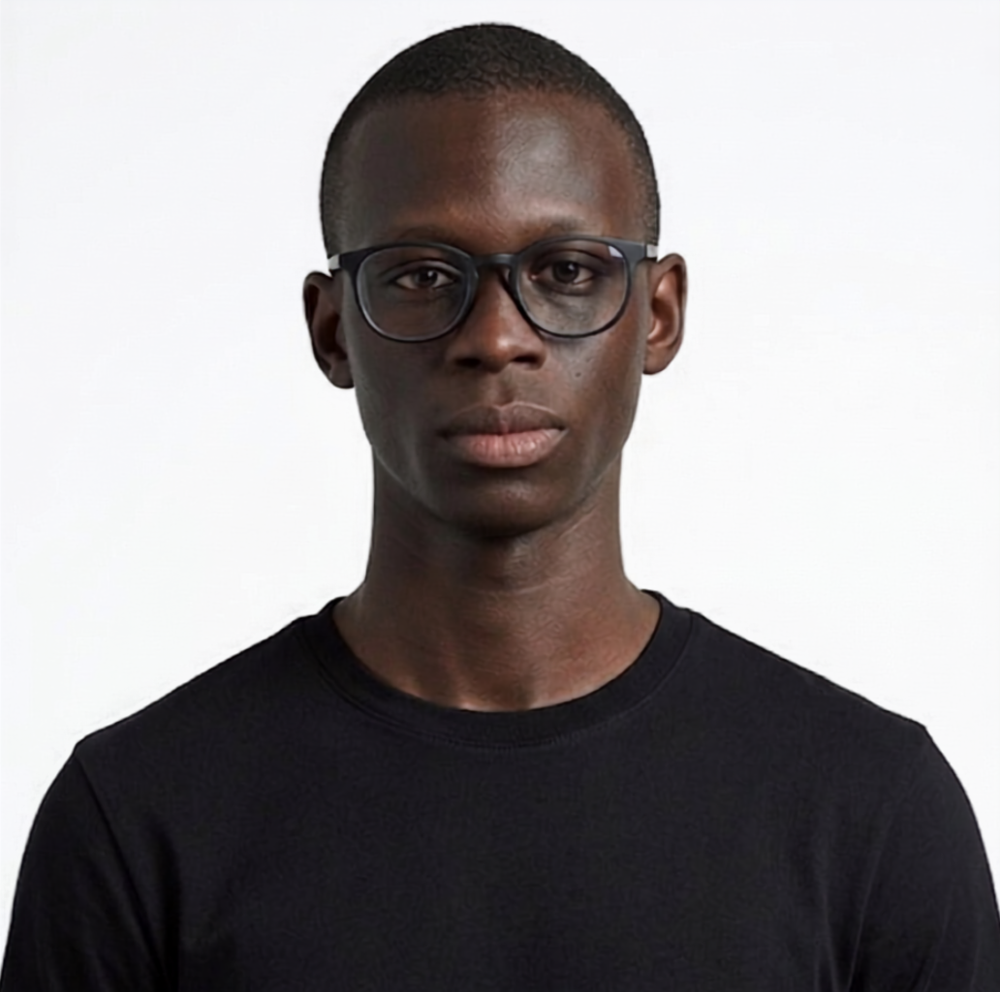

Software Engineer & Developer Advocate — Nairobi, Kenya
Building A# from the ground up: CLI, JSX runtime, and the full-stack framework behind it. Focused on a disciplined, minimalist approach to shipping production-ready software.
I kept running into the same wall: becoming "full-stack" meant learning a frontend framework, then a completely separate backend ecosystem, then stitching them together — or reaching for a backend-as-a-service tool just to skip the backend entirely. A# is my attempt to fix that: one language, one framework, from the interface all the way down to the API.